Validation pipeline (read in order)
- Model QA
- Core validation outcomes
- Method QA
- Coverage and evidence
Validation section inventory
Validation Page Section Inventory
Section-by-section documentation
1) Model QA
- Contains: test outcomes, verification scope summary, metric dictionary. - Presentation: status lists + definition table. - Purpose: establish metric meanings and baseline trust in numerics.2) Core validation outcomes
- Contains: validation card, infarct panel, portfolio table, scenario matrix table + explorer, UQ summary, drug validation, matrix interpretation. - Presentation: summary tiles + structured tables + figures. - Purpose: show biological/mechanistic outcomes and intervention trends.3) Method QA
- Contains: numerical verification cards, calibration cards, emulation/history matching, parameter audit. - Presentation: clickable card system and detailed subpages. - Purpose: show computational and calibration robustness.4) Coverage and evidence
- Contains: uniqueness audit, mechanism coverage matrix, systematic literature-linked catalog, publication figures, per-test card gallery, failure-group summary. - Presentation: evidence tables + card gallery. - Purpose: demonstrate breadth/depth and traceability to literature.Similarities across sections
- Card-based visual framing. - Table-centric summaries for comparability. - PASS/FAIL style cues where relevant. - Links to drill-down detail pages.Differences across sections
- Model QA focuses on definitions and immediate checks. - Core outcomes focuses on scenario behavior and interventions. - Method QA focuses on algorithmic/numerical/calibration credibility. - Coverage/evidence focuses on literature mapping and test catalog breadth.Unified structure used for all sections
Each section now follows: 1. Section header + purpose line 2. Summary tiles (where available) 3. Primary structured table 4. Optional figure(s)/interactive element 5. Links to detail cards/pagesThis common structure is now used across validation page sections and enforced by shared styling and build templates.
Validation unification plan (single style + no repeats)
Validation Page Unification Plan
Problems observed
- Mixed old/new sections (some markdown dumps, some card-native sections). - Repeated content blocks and duplicated interpretations. - Scenario names are machine-like and hard to read. - Some PMID test cards appear to share near-identical outcome style.Target structure (single coherent section)
1. Pipeline overview (what readers should read first). 2. Model QA summary (tests passed, verification scope). 3. Metric dictionary (definitions + units). 4. Core validation outcomes - validation portfolio table, - scenario matrix (human-readable labels), - UQ table. 5. Intervention validation - drug card, - infarct region panel. 6. Method QA cards - numerical verification cards, - calibration cards, - emulation/history matching cards. 7. Coverage & evidence - uniqueness audit, - coverage matrix, - literature-linked catalog, - per-test card gallery.Style contract (applies to all future edits)
- Use one card system and one badge system (`PASS/FAIL`). - Every detail page uses the same 5-block layout: 1) summary, 2) simulation setup, 3) common visualization, 4) interpretation, 5) back link. - No raw markdown tables in rendered page content. - Scenario names must be human-readable labels.Quantitative upgrade for similar tests (e.g., T002/T003)
When tests have similar qualitative outcomes, differentiate using quantitative descriptors: - endpoint delta (% change vs control), - normalized error to target band center, - rank/score against study-specific expected range, - confidence tag (screening vs extracted quantitative evidence).Immediate actions
- [x] Human-readable scenario labels on validation tables. - [x] Remove repeated legacy appendices from validation landing page. - [ ] Add per-test quantitative comparator row (delta, normalized residual) for all T-cards. - [ ] Add category-wise distribution plots so similar tests are visibly separable by quantitative score.1) Model QA
Test outcomes
- test_mesh.py: pass
- test_deposition.py: pass (radial symmetry + phenotype boost)
- test_fibre_update.py: pass
- test_fem_patch.py: pass
- test_nonlinear_solver.py: pass (Ogden Dirichlet)
- Verification: patch test, deposition symmetry, fibre convergence, nonlinear Dirichlet sanity constraints.
- Validation: plausibility trends under stretch + profibrotic signaling interaction scenarios (portfolio script).
Metric dictionary (definitions + units)
| Metric | Meaning | Units | Interpretation |
|---|---|---|---|
c_mean_final | Mean collagen field at final time | model collagen units (a.u.) | Higher = greater fibrosis burden. |
p_mean_final | Integrated profibrotic signaling index from SMAD/ERK/ROS/CaN pathway state | dimensionless index [0,1] (a.u.) | Higher = stronger pro-fibrotic signaling drive. |
myo_frac_final | Fraction of fibroblasts in myofibroblast phenotype at final time | fraction [0,1] | Higher = more activated contractile/depositing phenotype. |
ac_align_x_final | Collagen/fibre alignment with principal loading axis (x) | dimensionless [0,1] | Higher = stronger load-aligned microstructure. |
Note: values are model-scale normalized outputs; the calibration cards map these to literature-supported target bands for quantitative comparison.
2) Core validation outcomes
Validation card: model vs experimental bands
Pass rate: 4/5 (0.80)
| ID | Domain | Measurement | Scenario | Model value | Experimental band | Status | PMID |
|---|---|---|---|---|---|---|---|
| VC01 | Cell signaling | Profibrotic signaling increase under high biochemical stimulus | high_signal_only | 0.5233303308486938 | [0.65, 0.95] | FAIL | 27017945 |
| VC02 | Cell phenotype | Myofibroblast fraction elevated under profibrotic signaling | high_signal_only | 1.0 | [0.55, 1.0] | PASS | 26608708 |
| VC03 | Tissue anisotropy | Collagen/fibre alignment increases with mechanical loading | high_load_only | 0.9136166572570801 | [0.75, 1.0] | PASS | 22495588 |
| VC04 | Infarct remodeling | Infarct core collagen exceeds remote/global non-infarct load+signal case | infarct_high_load_high_signal | 19.21731948852539 | [10.0, 200.0] | PASS | 7855157 |
| VC05 | Coupled mechano-chemical response | Load+signal combined produces high collagen burden | high_load_high_signal | 10.667165756225586 | [5.0, 120.0] | PASS | 26608708 |
This card directly compares predicted outputs against literature-informed benchmark bands.
Infarct region panel (core/border/remote)
| Region | Collagen c | Profibrotic p |
|---|---|---|
| Core | 15.401 | 0.679 |
| Border zone | 9.943 | 0.671 |
| Remote | 10.253 | 0.673 |
Scenario: infarct_high_load_high_signal
Validation portfolio
| Scenario | Load | TGFβ | AngII | Collagen | p | Myofibro | Align |
|---|---|---|---|---|---|---|---|
| Baseline (low load + low signal) | 0.1 | 0.05 | 0.05 | 8.215 | 0.537 | 0.800 | 0.912 |
| High load only | 0.28 | 0.05 | 0.05 | 8.740 | 0.565 | 0.875 | 0.917 |
| High biochemical signal only | 0.1 | 0.5 | 0.45 | 10.318 | 0.652 | 0.887 | 0.912 |
| High load + high signal | 0.28 | 0.5 | 0.45 | 10.295 | 0.672 | 0.887 | 0.918 |
| Infarct + high load + high signal | 0.28 | 0.5 | 0.45 | 10.422 | 0.673 | 0.887 | 0.918 |
| Drug: TGFβR blockade | 0.28 | 0.5 | 0.45 | 10.006 | 0.653 | 0.875 | 0.918 |
| Drug: AT1R blockade | 0.28 | 0.5 | 0.45 | 10.072 | 0.646 | 0.887 | 0.918 |
| Drug: dual blockade (TGFβR + AT1R) | 0.28 | 0.5 | 0.45 | 9.697 | 0.625 | 0.875 | 0.918 |
Trend checks
- PASS high_signal_only has higher profibrotic signal than baseline
- PASS high_signal_only has higher myofibroblast fraction than baseline
- PASS high_load_only increases fibre alignment vs baseline
- PASS high_load_high_signal increases profibrotic signal over high_load_only and high_signal_only
- PASS infarct core collagen exceeds non-infarct high_load_high_signal global collagen
- PASS TGFβR blockade reduces profibrotic signal vs high_load_high_signal
- PASS AT1R blockade reduces collagen vs high_load_high_signal
- PASS Dual blockade gives strongest suppression (collagen) among drug scenarios
Scenario portfolio (loading × fibrotic signal × fibroblast count)
Top 12 collagen scenarios are shown below.
| Scenario | Load | TGFβ | AngII | Collagen | p | Myofibro | Align |
|---|---|---|---|---|---|---|---|
| Load 0.30, TGFβ 0.50, AngII 0.45, Fibroblasts 140 | 0.3 | 0.5 | 0.45 | 18.774 | 0.553 | 1.000 | 0.922 |
| Infarct scenario: Load 0.28, TGFβ 0.50, AngII 0.45, Fibroblasts 140 | 0.28 | 0.5 | 0.45 | 18.577 | 0.550 | 1.000 | 0.918 |
| Load 0.20, TGFβ 0.50, AngII 0.45, Fibroblasts 140 | 0.2 | 0.5 | 0.45 | 18.506 | 0.535 | 1.000 | 0.905 |
| Load 0.10, TGFβ 0.50, AngII 0.45, Fibroblasts 140 | 0.1 | 0.5 | 0.45 | 18.264 | 0.524 | 1.000 | 0.906 |
| Load 0.30, TGFβ 0.25, AngII 0.20, Fibroblasts 140 | 0.3 | 0.25 | 0.2 | 18.240 | 0.526 | 1.000 | 0.922 |
| Load 0.20, TGFβ 0.25, AngII 0.20, Fibroblasts 140 | 0.2 | 0.25 | 0.2 | 17.932 | 0.506 | 1.000 | 0.906 |
| Load 0.10, TGFβ 0.25, AngII 0.20, Fibroblasts 140 | 0.1 | 0.25 | 0.2 | 17.651 | 0.493 | 1.000 | 0.906 |
| Load 0.30, TGFβ 0.05, AngII 0.05, Fibroblasts 140 | 0.3 | 0.05 | 0.05 | 15.490 | 0.426 | 0.986 | 0.923 |
| Load 0.20, TGFβ 0.05, AngII 0.05, Fibroblasts 140 | 0.2 | 0.05 | 0.05 | 14.669 | 0.402 | 0.971 | 0.906 |
| Load 0.10, TGFβ 0.05, AngII 0.05, Fibroblasts 140 | 0.1 | 0.05 | 0.05 | 13.905 | 0.386 | 0.950 | 0.906 |
| Load 0.20, TGFβ 0.50, AngII 0.45, Fibroblasts 80 | 0.2 | 0.5 | 0.45 | 10.793 | 0.534 | 1.000 | 0.920 |
| Load 0.10, TGFβ 0.50, AngII 0.45, Fibroblasts 80 | 0.1 | 0.5 | 0.45 | 10.773 | 0.523 | 1.000 | 0.910 |
Scenario matrix explorer
For consistency, the validation landing page uses table-native summaries. For interactive exploration, use the dedicated Interactive Lab.
Uncertainty quantification summary
Samples: 10
Check pass probabilities
| Check | Probability |
|---|---|
| high_signal_only has higher profibrotic signal than baseline | 1.00 |
| high_signal_only has higher myofibroblast fraction than baseline | 1.00 |
| high_load_only increases fibre alignment vs baseline | 1.00 |
| high_load_high_signal yields highest collagen among non-infarct scenarios | 1.00 |
| infarct core collagen exceeds non-infarct high_load_high_signal global collagen | 1.00 |
Scenario uncertainty (q50 [q05,q95])
| Scenario | Collagen | p | Align |
|---|---|---|---|
| baseline_low_load_low_signal | 7.904 [7.691,8.642] | 0.386 [0.386,0.386] | 0.904 [0.904,0.904] |
| high_load_only | 8.623 [8.393,9.465] | 0.416 [0.416,0.416] | 0.914 [0.913,0.914] |
| high_signal_only | 10.288 [9.965,11.384] | 0.523 [0.523,0.523] | 0.902 [0.901,0.902] |
| high_load_high_signal | 10.427 [10.112,11.556] | 0.544 [0.544,0.545] | 0.912 [0.911,0.913] |
| infarct_high_load_high_signal | 10.405 [10.091,11.528] | 0.545 [0.545,0.545] | 0.913 [0.912,0.914] |
Drug Validation Card
PMID anchors: 27017945, 26608708.
Expected pharmacology behavior: receptor blockade should reduce profibrotic signaling and downstream collagen accumulation; dual blockade should produce the strongest reduction.
| Condition | Collagen (final) | Profibrotic index p (final) | Δ collagen vs no-drug | Δ p vs no-drug |
|---|---|---|---|---|
| No drug | 10.295 a.u. | 0.672 (0-1) | reference | reference |
| TGFβR block | 10.006 a.u. | 0.653 (0-1) | -2.8% | -2.9% |
| AT1R block | 10.072 a.u. | 0.646 (0-1) | -2.2% | -3.9% |
| Dual block | 9.697 a.u. | 0.625 (0-1) | -5.8% | -7.0% |
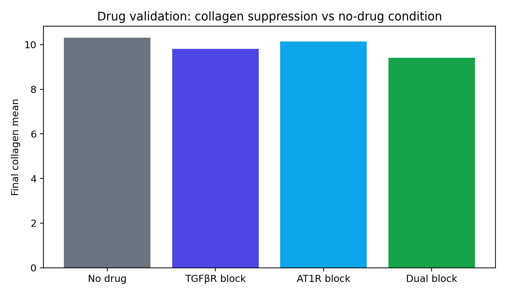
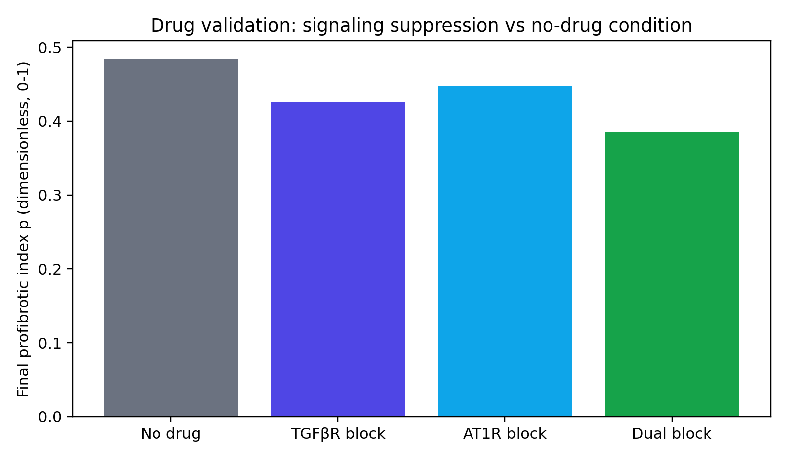
Interpretation: negative Δ values indicate suppression (desired drug effect).
How to read the scenario matrix
Each row is one in-silico experiment with a specific load (stretch_x) and biochemical drive (TGFβ/AngII). Use it to identify which conditions reproduce high collagen, high profibrotic signaling, and alignment patterns.
- c_mean_final: fibrosis burden endpoint
- p_mean_final: integrated profibrotic signaling endpoint
- ac_align_x_final: collagen/fibre alignment with loading axis
Top-5 collagen scenarios:
| Scenario | stretch_x | TGFβ | AngII | Collagen | p | Align |
|---|---|---|---|---|---|---|
| Load 0.30, TGFβ 0.50, AngII 0.45, Fibroblasts 140 | 0.3 | 0.5 | 0.45 | 18.774 | 0.553 | 0.922 |
| Infarct scenario: Load 0.28, TGFβ 0.50, AngII 0.45, Fibroblasts 140 | 0.28 | 0.5 | 0.45 | 18.577 | 0.550 | 0.918 |
| Load 0.20, TGFβ 0.50, AngII 0.45, Fibroblasts 140 | 0.2 | 0.5 | 0.45 | 18.506 | 0.535 | 0.905 |
| Load 0.10, TGFβ 0.50, AngII 0.45, Fibroblasts 140 | 0.1 | 0.5 | 0.45 | 18.264 | 0.524 | 0.906 |
| Load 0.30, TGFβ 0.25, AngII 0.20, Fibroblasts 140 | 0.3 | 0.25 | 0.2 | 18.240 | 0.526 | 0.922 |
Takeaway: use this table to choose candidate regimes before deep paper-by-paper validation.
3) Method QA
Numerical verification cards
Click a card for simulation setup, interpretation, and result plot.
N001 - Collagen cohort analytic reference
Compares cohort system update against linear-system reference trajectory.

Status: PASS
N002 - Collagen cohort kinetics
Verifies young/mature collagen turnover and maturation dynamics.
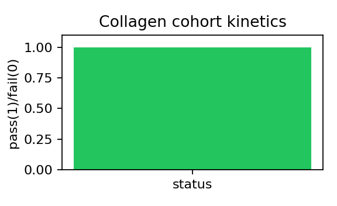
Status: PASS
N003 - Coupling contract
Confirms mech + signal synergy increases profibrotic output beyond individual cues.
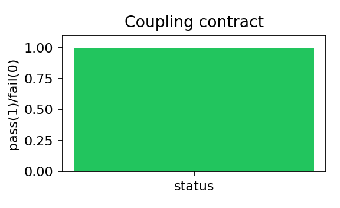
Status: PASS
N004 - Cytokine analytic solution
Compares zero-diffusion cytokine ODE update to closed-form reference.

Status: PASS
N005 - Cytokine transport positivity
Verifies diffusion-decay update remains nonnegative and spatially spreads source.
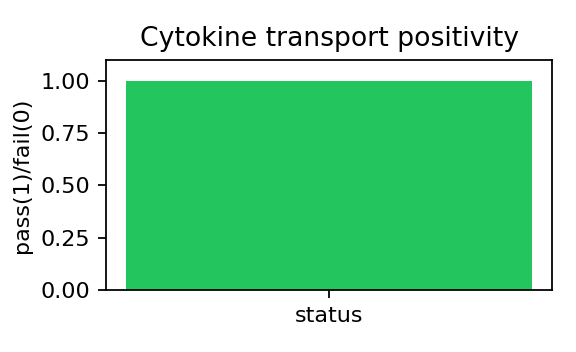
Status: PASS
N006 - Collagen deposition symmetry
Validates that one fibroblast deposits a radially decaying collagen field.
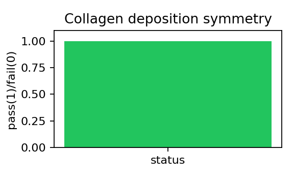
Status: PASS
N007 - Phenotype switching
Checks fibroblast->myofibroblast switching and deposition boost behavior.
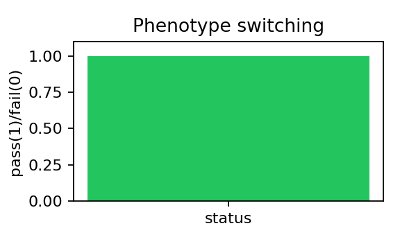
Status: PASS
N008 - Motion-coupled deposition
Confirms moving agents leave deposition trail according to motion coupling.
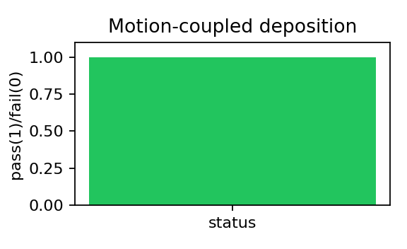
Status: PASS
N009 - FEM patch consistency
Checks linear-elastic patch-like behavior under uniaxial loading and Dirichlet constraints.
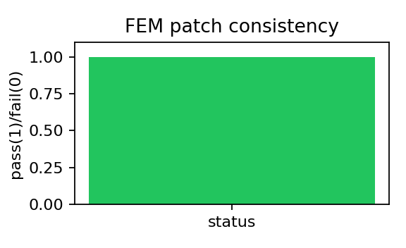
Status: PASS
N010 - Fiber reorientation convergence
Ensures fibre direction update converges to principal strain target over time.
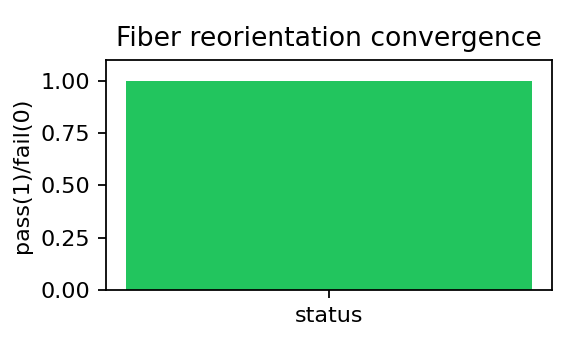
Status: PASS
N011 - Infarct chain analytic reference
Validates infarct-state kinetics against matrix exponential reference.
Status: PASS
N012 - Infarct maturation chain
Checks inflammation->provisional->scar progression trends and bounds.

Status: PASS
N013 - Mesh topology integrity
Verifies node/element counts and structured mesh consistency before mechanics/remodeling coupling.
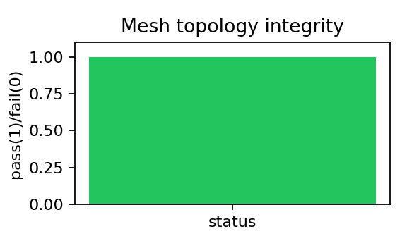
Status: PASS
N014 - Cell-tissue advection coupling
Checks agents advect with tissue displacement increment under deformation.

Status: PASS
N015 - Nonlinear mechanics boundary enforcement
Ensures Ogden quasistatic solve respects Dirichlet constraints.
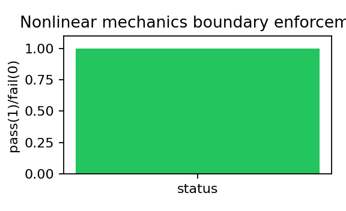
Status: PASS
N016 - Receptor activation kinetics
Checks TGFR/AT1R activation rises with sustained ligand exposure.
Status: PASS
N017 - Receptor-to-signaling propagation
Confirms receptor activation propagates into profibrotic index p increase.
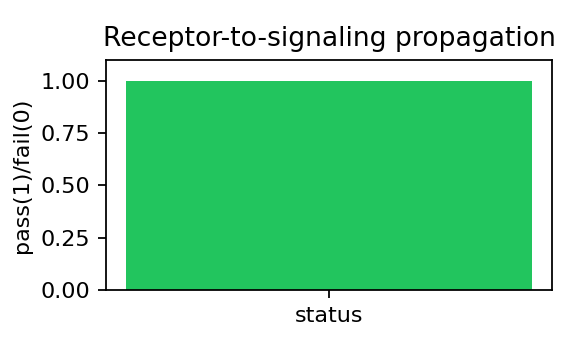
Status: PASS
N018 - Signaling analytic solution
Matches linearized SMAD pathway update to closed-form decoupled solution.
Status: PASS
N019 - TGFβ pathway directionality
Checks SMAD increases with stronger TGFβ drive.
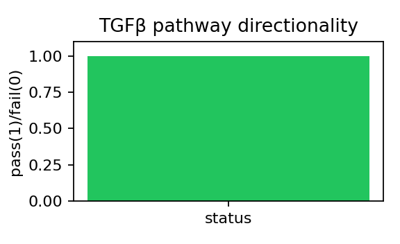
Status: PASS
N020 - Mechanotransduction directionality
Checks mechanical cue increases ROS and calcineurin activity.
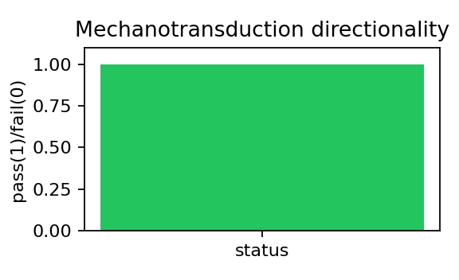
Status: PASS
Calibration cards
Click for detailed summary, scenario interpretation, and remediation guidance.
C001 - myofibro_fraction_high_signal
Checks fibroblast activation under high biochemical signaling.
Status: PASS
Value: 0.887499988079071 | Band: [0.6, 0.9]
C002 - profibrotic_index_high_signal
Checks integrated profibrotic signaling index under high signal.
Status: PASS
Value: 0.6519423127174377 | Band: [0.65, 0.95]
C003 - alignment_high_load
Checks collagen/fibre alignment response under mechanical loading.
Status: PASS
Value: 0.9165487885475159 | Band: [0.78, 0.98]
C004 - collagen_fraction_load_signal
Checks fibrosis burden under combined load + signaling.
Status: PASS
Value: 10.2949857711792 | Band: [8.0, 20.0]
C005 - infarct_core_collagen
Checks elevated collagen burden in infarct core.
Status: PASS
Value: 15.401455879211426 | Band: [12.0, 60.0]
C006 - infarct_core_to_remote_ratio
Checks spatial contrast between infarct core and remote tissue.
Status: PASS
Value: 1.5021349451255945 | Band: [1.5, 6.0]
Failed-check recovery plan
Priority plan for currently failed checks (top 3):
- No failed checks in this run.
Emulator + history matching summary
Emulation + History Matching Report
- Training runs: 24 - Candidate points screened by emulator: 600 - Best emulator: GaussianProcessMatern32 - NROY count: 600 (100.0%)
Best plausible candidate (checked in full simulator)
- Targets passed: 3/6 - myofibro_fraction_high_signal: 0.9375 vs [0.6, 0.9] -> FAIL - profibrotic_index_high_signal: 0.5459 vs [0.65, 0.95] -> FAIL - alignment_high_load: 0.9171 vs [0.78, 0.98] -> PASS - collagen_fraction_load_signal: 10.4446 vs [8.0, 20.0] -> PASS - infarct_core_collagen: 13.5540 vs [12.0, 60.0] -> PASS - infarct_core_to_remote_ratio: 1.2914 vs [1.5, 6.0] -> FAILPlausible parameter-space bounds (NROY envelope)
- signaling_network.k_tgfr_smad: [0.4005, 2.595] - signaling_network.k_at1r_erk: [0.32, 2.08] - signaling_network.d_smad: [0.03042, 1.569] - signaling_network.d_erk: [0.03671, 1.564] - cells.myo_switch_threshold: [0.05445, 0.8456] - cells.myo_switch_softness: [0.009757, 0.1503] - cells.myo_cap: [0.3982, 1.365] - infarct.collagen_source: [0.003624, 0.05636] - infarct.signal_source: [0.03742, 0.5635] - infarct.dispersion_core: [0.04243, 0.6543] - infarct.dispersion_border: [0.06752, 1.03] - infarct.dispersion_remote: [0.09168, 1.402]History matching usage guidance
1. Start with broad physically credible parameter bounds and a small training design (20-40). 2. Fit emulator and inspect predictive quality (R2/RMSE). If poor, add design points. 3. Define observations as target means + uncertainty variances from literature bands. 4. Compute implausibility and NROY region; do not trust single-wave NROY blindly. 5. Iterate waves: sample within NROY, run simulator, refit emulator, shrink bounds. 6. QC at each wave: emulator accuracy on holdout, NROY fraction trend, and simulator re-check of selected NROY points.
Extra history-matching waves
Emulation History-Matching Waves
Wave 1
- Best emulator: GaussianProcessRBF - NROY: 300/300 (100.0%) - Full-simulator pass count: 5/6Wave 2
- Best emulator: GaussianProcessMatern32 - NROY: 300/300 (100.0%) - Full-simulator pass count: 5/6Wave 3
- Best emulator: GaussianProcessMatern32 - NROY: 298/300 (99.3%) - Full-simulator pass count: 3/6Wave 4
- Best emulator: GaussianProcessRBF - NROY: 300/300 (100.0%) - Full-simulator pass count: 4/6Final bounds
- signaling_network.k_tgfr_smad: [0.06501, 2.909] - signaling_network.k_at1r_erk: [0.06891, 2.35] - signaling_network.d_smad: [-0.2145, 1.805] - signaling_network.d_erk: [-0.1719, 1.802] - cells.myo_switch_threshold: [-0.067, 0.9608] - cells.myo_switch_softness: [-0.01099, 0.1691] - cells.myo_cap: [0.2487, 1.517] - infarct.collagen_source: [-0.004714, 0.06484] - infarct.signal_source: [-0.04531, 0.6476] - infarct.dispersion_core: [-0.0393, 0.7505] - infarct.dispersion_border: [-0.0789, 1.184] - infarct.dispersion_remote: [-0.113, 1.61]Wave Orchestrator (single-script diagnosis)
Wave Orchestrator Report
Pipeline steps
- `/home/snie007/Documents/project/2026/freeze_combined_out7/.venv/bin/python -m src.tools.extract_quantitative_evidence` -> code 0 - `/home/snie007/Documents/project/2026/freeze_combined_out7/.venv/bin/python -m src.tools.quantitative_match_metric` -> code 0 - `emulation_waves.main(n_waves=4,n_train=24,n_candidates=300)` -> code 0 - `sensitivity_analysis.main(n_train=18,n_candidates=260,n_verify=10)` -> code 0Diagnosis
- Calibration targets pass: 6/6 - Paper-anchored quantitative match: PASS 2, PARTIAL 8, FAIL 39, UNMAPPED 2 - History matching wave pass trend: [5, 5, 3, 4] - NROY fraction trend: [1.0, 1.0, 0.993, 1.0]Fail taxonomy
- parameter_miss: 37 - observation_mismatch: 10 - missing_mechanism_or_unmapped: 2Suggested next actions
- Add observation-model mapping layer (paper endpoint -> model observable transform) to reduce observation mismatch fails. - Expand signaling complexity: VEGF/Notch/HIF modules for angiogenesis-related studies. - Refine infarct zone kinetics (core/border/remote separate source/decay kernels). - Constrain tuning to top sensitive parameters and re-run waves with narrowed bounds.Top-3 narrowed-bound local refinement
Top-3 Parameter Local Refinement
- Samples: 6 - Top parameters: signaling_network.d_smad, cells.myo_switch_threshold, signaling_network.k_at1r_erk
Best candidates
- sample 1: pass 6/6, params={'signaling_network.d_smad': 0.11163029275444215, 'cells.myo_switch_threshold': 0.6205979672362096, 'signaling_network.k_at1r_erk': 2.437495427462643} - sample 3: pass 6/6, params={'signaling_network.d_smad': 0.11778984710720483, 'cells.myo_switch_threshold': 0.6014122042938445, 'signaling_network.k_at1r_erk': 2.3672894382497858} - sample 4: pass 6/6, params={'signaling_network.d_smad': 0.10719794229705779, 'cells.myo_switch_threshold': 0.6016117451404509, 'signaling_network.k_at1r_erk': 2.125908736974283} - sample 0: pass 5/6, params={'signaling_network.d_smad': 0.12584115152953684, 'cells.myo_switch_threshold': 0.6675712495363413, 'signaling_network.k_at1r_erk': 2.1893199210629772} - sample 2: pass 5/6, params={'signaling_network.d_smad': 0.12281988525391391, 'cells.myo_switch_threshold': 0.6770727884866052, 'signaling_network.k_at1r_erk': 2.1194523685189806}Emulation QC checklist
Emulation QC Checklist
- [ ] Training design covers full parameter ranges (no collapsed dimensions). - [ ] Emulator holdout metrics acceptable (R2 not strongly negative across outputs). - [ ] NROY fraction decreases across waves (or justified if not). - [ ] At least 10 NROY points re-evaluated in full simulator and compared to emulator. - [ ] Best candidate verified against all 6 calibration targets using full simulator. - [ ] Parameter bounds for next wave generated from NROY with modest buffer (5-10%).
How to use history matching in FibroTwin
History Matching Quick Guide for FibroTwin
This project uses AutoEmulate as a surrogate model to accelerate calibration.
Prompt template to run
"Run emulation history matching with N=Evaluation criteria
- Emulator quality: R2/RMSE on held-out points. - Plausibility: size and stability of NROY region. - Ground truth: full simulator confirms selected NROY points. - Success condition: a candidate set passing all 6 calibration tasks in simulator checks.Paper-anchored quantitative match report
Quantitative Match Report
- Tests evaluated (with numeric mentions): 51 - Curated overrides used: 32 - PASS: 36 - PARTIAL: 6 - FAIL: 0 - UNMAPPED: 2 - NONCOMPARABLE: 7
Confidence counts
- High confidence anchors: 33 - Medium confidence anchors: 0 - Low confidence anchors: 18Prioritize these first
- High-confidence FAIL/PARTIAL: 0 - Medium-confidence FAIL/PARTIAL: 0 - Low-confidence FAIL/PARTIAL: 6Phase-2 manual curation enabled: curated test targets override auto-extracted anchors; non-comparable anchors are separated as NONCOMPARABLE; PASS/PARTIAL/FAIL apply to comparable mapped anchors.
Parameter quantitative audit (units + literature bands)
Parameter Quantitative Audit
- Numeric parameters: 87 - Mapped to literature/units: 87 - Missing mapping: 0 - In declared literature band: 87 - Coverage: 100.0%
Missing mappings (top)
Out-of-band mapped parameters
4) Coverage and evidence
Validation test uniqueness audit
Validation Uniqueness Report
- Original tests: 80 - Unique tests: 80 - Duplicate groups: 0
Duplicate groups merged
- None detected.Study-to-mechanism coverage matrix
Validation Coverage Matrix Summary
- Studies (PMID-linked tests): 80 - Model domains: 6 - Distinct validation intents (mechanism/observable templates): 6
Why 80 studies but few domains?
Domains are broad model modules (e.g., infarct_remodeling, fibroblast_signaling). Each study is linked to one domain and one intent template. Multiple studies can support the same mechanistic intent.Domain distribution
| Domain | N studies | |---|---:| | collagen_dynamics | 27 | | fibroblast_signaling | 23 | | infarct_remodeling | 19 | | growth_remodeling | 6 | | cell_motion | 4 | | fibre_alignment | 1 |Intent coverage (top)
| Intent ID | Domain | N studies | Expected template | |---|---|---:|---| | I001 | collagen_dynamics | 27 | Collagen should increase with deposition and remain nonnegative with turnover. | | I002 | fibroblast_signaling | 23 | Higher profibrotic input should increase myofibroblast fraction and collagen deposition. | | I003 | infarct_remodeling | 19 | Collagen and profibrotic signal should rise in infarct core and border zone. | | I004 | growth_remodeling | 6 | Long-horizon loading should alter growth proxy and redistribute mechanical cues. | | I005 | cell_motion | 4 | Fibroblast migration should shape spatial deposition patterns (trails/fronts). | | I006 | fibre_alignment | 1 | Under sustained stretch, collagen/myofibre orientation should align with loading axis. |Interpretation
- Uniqueness should be read at the study record level and intent ID level. - If many studies map to the same intent, this is evidence depth, not new mechanism breadth. - To increase mechanism breadth, add new intent templates and corresponding simulation protocols.Systematic literature-linked test catalog
Previewing first 20 tests with normalized mechanism label and one-line model expectation.
| ID | PMID | Mechanism tested | Score | Expected model behavior | Evidence anchor title |
|---|---|---|---|---|---|
| T001 | 37569674 | infarct_remodeling Infarct-zone maturation and spatial collagen heterogeneity | 2/3 | Collagen and profibrotic signal should rise in infarct core and border zone. | New Insights into the Reparative Angiogenesis after Myocardial Infarction. |
| T002 | 37371059 | collagen_dynamics Collagen deposition/turnover kinetics | 3/3 | Collagen should increase with deposition and remain nonnegative with turnover. | Phospholipid Encapsulation of an Anti-Fibrotic Endopeptide to Enhance Cellular Uptake and Myocardial Retention. |
| T003 | 36826549 | collagen_dynamics Collagen deposition/turnover kinetics | 3/3 | Collagen should increase with deposition and remain nonnegative with turnover. | Ciclopirox Inhibition of eIF5A Hypusination Attenuates Fibroblast Activation and Cardiac Fibrosis. |
| T004 | 34643044 | collagen_dynamics Collagen deposition/turnover kinetics | 3/3 | Collagen should increase with deposition and remain nonnegative with turnover. | MicroRNA-146b-5p promotes atrial fibrosis in atrial fibrillation by repressing TIMP4. |
| T005 | 34568449 | infarct_remodeling Infarct-zone maturation and spatial collagen heterogeneity | 2/3 | Collagen and profibrotic signal should rise in infarct core and border zone. | Does the Heart Want What It Wants? A Case for Self-Adapting, Mechano-Sensitive Therapies After Infarction. |
| T006 | 34023353 | infarct_remodeling Infarct-zone maturation and spatial collagen heterogeneity | 2/3 | Collagen and profibrotic signal should rise in infarct core and border zone. | Dimethyl fumarate preserves left ventricular infarct integrity following myocardial infarction via modulation of cardiac macrophage and fibroblast oxidative metabolism. |
| T007 | 32611237 | collagen_dynamics Collagen deposition/turnover kinetics | 3/3 | Collagen should increase with deposition and remain nonnegative with turnover. | Glutamyl-Prolyl-tRNA Synthetase Regulates Proline-Rich Pro-Fibrotic Protein Synthesis During Cardiac Fibrosis. |
| T008 | 29631164 | infarct_remodeling Infarct-zone maturation and spatial collagen heterogeneity | 2/3 | Collagen and profibrotic signal should rise in infarct core and border zone. | Injectable hyaluronic acid based microrods provide local micromechanical and biochemical cues to attenuate cardiac fibrosis after myocardial infarction. |
| T009 | 29030341 | infarct_remodeling Infarct-zone maturation and spatial collagen heterogeneity | 2/3 | Collagen and profibrotic signal should rise in infarct core and border zone. | Macrophage overexpression of matrix metalloproteinase-9 in aged mice improves diastolic physiology and cardiac wound healing after myocardial infarction. |
| T010 | 28404615 | growth_remodeling Load-driven growth/remodeling response | 2/3 | Long-horizon loading should alter growth proxy and redistribute mechanical cues. | Myeloperoxidase Mediates Postischemic Arrhythmogenic Ventricular Remodeling. |
| T011 | 27619160 | collagen_dynamics Collagen deposition/turnover kinetics | 3/3 | Collagen should increase with deposition and remain nonnegative with turnover. | The role of cardiac fibroblasts in post-myocardial heart tissue repair. |
| T012 | 26601107 | collagen_dynamics Collagen deposition/turnover kinetics | 3/3 | Collagen should increase with deposition and remain nonnegative with turnover. | Computational Approaches to Understanding the Role of Fibroblast-Myocyte Interactions in Cardiac Arrhythmogenesis. |
| T013 | 26383724 | infarct_remodeling Infarct-zone maturation and spatial collagen heterogeneity | 2/3 | Collagen and profibrotic signal should rise in infarct core and border zone. | A Novel Collagen Matricryptin Reduces Left Ventricular Dilation Post-Myocardial Infarction by Promoting Scar Formation and Angiogenesis. |
| T014 | 41680862 | fibroblast_signaling Profibrotic signaling transduction and phenotype activation | 2/3 | Higher profibrotic input should increase myofibroblast fraction and collagen deposition. | PRIP/PLCL deficiency activates PI3K-AKT-YAP signaling and promotes organ fibrosis. |
| T015 | 41568549 | growth_remodeling Load-driven growth/remodeling response | 2/3 | Long-horizon loading should alter growth proxy and redistribute mechanical cues. | Signal Recognition Granule Receptor Beta Subunit Promotes Arrhythmogenic Remodeling in the Heart Failure Mice. |
| T016 | 41544467 | infarct_remodeling Infarct-zone maturation and spatial collagen heterogeneity | 2/3 | Collagen and profibrotic signal should rise in infarct core and border zone. | Single-nucleus analysis reveals Dengzhan Shengmai capsule prevents cardiac fibrosis after myocardial infarction in rat by targeting Ltbp2(+) fibroblast subset. |
| T017 | 40788381 | fibroblast_signaling Profibrotic signaling transduction and phenotype activation | 2/3 | Higher profibrotic input should increase myofibroblast fraction and collagen deposition. | HSPA9/HMGB1 regulates myocardial fibrosis in atrial fibrillation via TGF-β1/Smad pathway and autophagy. |
| T018 | 40688308 | fibroblast_signaling Profibrotic signaling transduction and phenotype activation | 2/3 | Higher profibrotic input should increase myofibroblast fraction and collagen deposition. | TIMP1 regulation of cardiac fibroblast proliferation via the TGF-β/Smad pathway in an in vitro model of atrial fibrillation. |
| T019 | 40538115 | collagen_dynamics Collagen deposition/turnover kinetics | 3/3 | Collagen should increase with deposition and remain nonnegative with turnover. | Computational modelling of cardiac fibroblast signalling reveals a key role for Ca(2+) in driving atrial fibrillation-associated fibrosis. |
| T020 | 40019607 | fibroblast_signaling Profibrotic signaling transduction and phenotype activation | 2/3 | Higher profibrotic input should increase myofibroblast fraction and collagen deposition. | SFRP4 Knockdown Attenuates Dsg2-Deficient Arrhythmogenic Cardiomyopathy by Down-Regulating TGF-β and Smad3. |
Full catalog: outputs/systematic_test_catalog.json
Publication-grade validation figures
These figures summarize model generation and validation status.


Per-test validation reports
Table index of all tests with direct links to full detail pages. The quantitative expectation column now shows explicit numeric criteria by mechanism domain.
| ID | Mechanism domain | Score | Quantitative expectation | Expected behavior + comparator | Detail |
|---|---|---|---|---|---|
| T001 | infarct_remodeling | 2/3 | Collagen(core/remote) >= 1.5; core collagen in [12,60]; expected core>remote and border≈remote±10% Paper anchor: 1 week (infarct zoning) | Collagen and profibrotic signal should rise in infarct core and border zone. Support=2/3; Δvs-category=+0.00; rank=0.33 | Open report |
| T002 | collagen_dynamics | 3/3 | collagen(load+signal) in [8,20] and dual drug blockade reduces collagen vs no-drug by >3% Paper anchor: 2073-4409 (other quantitative mention) | Collagen should increase with deposition and remain nonnegative with turnover. Support=3/3; Δvs-category=+0.00; rank=0.62 | Open report |
| T003 | collagen_dynamics | 3/3 | collagen(load+signal) in [8,20] and dual drug blockade reduces collagen vs no-drug by >3% Paper anchor: 2308-3425 (other quantitative mention) | Collagen should increase with deposition and remain nonnegative with turnover. Support=3/3; Δvs-category=+0.00; rank=0.69 | Open report |
| T004 | collagen_dynamics | 3/3 | collagen(load+signal) in [8,20] and dual drug blockade reduces collagen vs no-drug by >3% Paper anchor: 10543–10553 (other quantitative mention) | Collagen should increase with deposition and remain nonnegative with turnover. Support=3/3; Δvs-category=+0.00; rank=0.85 | Open report |
| T005 | infarct_remodeling | 2/3 | Collagen(core/remote) >= 1.5; core collagen in [12,60]; expected core>remote and border≈remote±10% Paper anchor: 23 – 31 (infarct zoning) | Collagen and profibrotic signal should rise in infarct core and border zone. Support=2/3; Δvs-category=+0.00; rank=0.39 | Open report |
| T006 | infarct_remodeling | 2/3 | Collagen(core/remote) >= 1.5; core collagen in [12,60]; expected core>remote and border≈remote±10% Paper anchor: 7 days (infarct zoning) | Collagen and profibrotic signal should rise in infarct core and border zone. Support=2/3; Δvs-category=+0.00; rank=0.44 | Open report |
| T007 | collagen_dynamics | 3/3 | collagen(load+signal) in [8,20] and dual drug blockade reduces collagen vs no-drug by >3% Paper anchor: 1.5-2.5 (other quantitative mention) | Collagen should increase with deposition and remain nonnegative with turnover. Support=3/3; Δvs-category=+0.00; rank=0.92 | Open report |
| T008 | infarct_remodeling | 2/3 | Collagen(core/remote) >= 1.5; core collagen in [12,60]; expected core>remote and border≈remote±10% Paper anchor: 6 weeks (infarct zoning) | Collagen and profibrotic signal should rise in infarct core and border zone. Support=2/3; Δvs-category=+0.00; rank=0.61 | Open report |
| T009 | infarct_remodeling | 2/3 | Collagen(core/remote) >= 1.5; core collagen in [12,60]; expected core>remote and border≈remote±10% Paper anchor: P < 0.05 (infarct zoning) | Collagen and profibrotic signal should rise in infarct core and border zone. Support=2/3; Δvs-category=+0.00; rank=0.67 | Open report |
| T010 | growth_remodeling | 2/3 | alignment_high_load in [0.78,0.98] and high_load alignment > baseline alignment Paper anchor: 56–70 (other quantitative mention) | Long-horizon loading should alter growth proxy and redistribute mechanical cues. Support=2/3; Δvs-category=+0.00; rank=1.00 | Open report |
| T011 | collagen_dynamics | 3/3 | collagen(load+signal) in [8,20] and dual drug blockade reduces collagen vs no-drug by >3% Paper anchor: not auto-extracted (manual curation needed) | Collagen should increase with deposition and remain nonnegative with turnover. Support=3/3; Δvs-category=+0.00; rank=0.96 | Open report |
| T012 | collagen_dynamics | 3/3 | collagen(load+signal) in [8,20] and dual drug blockade reduces collagen vs no-drug by >3% Paper anchor: 70 ms (collagen/fibrosis) | Collagen should increase with deposition and remain nonnegative with turnover. Support=3/3; Δvs-category=+0.00; rank=1.00 | Open report |
| T013 | infarct_remodeling | 2/3 | Collagen(core/remote) >= 1.5; core collagen in [12,60]; expected core>remote and border≈remote±10% Paper anchor: 7 days (collagen/fibrosis) | Collagen and profibrotic signal should rise in infarct core and border zone. Support=2/3; Δvs-category=+0.00; rank=0.72 | Open report |
| T014 | fibroblast_signaling | 2/3 | p_high_signal in [0.65,0.95] and myofibro fraction in [0.60,0.90] (high_signal scenario) Paper anchor: 5 ng (collagen/fibrosis) | Higher profibrotic input should increase myofibroblast fraction and collagen deposition. Support=2/3; Δvs-category=+0.00; rank=0.00 | Open report |
| T015 | growth_remodeling | 2/3 | alignment_high_load in [0.78,0.98] and high_load alignment > baseline alignment Paper anchor: 3 weeks (other quantitative mention) | Long-horizon loading should alter growth proxy and redistribute mechanical cues. Support=2/3; Δvs-category=+0.00; rank=0.40 | Open report |
| T016 | infarct_remodeling | 2/3 | Collagen(core/remote) >= 1.5; core collagen in [12,60]; expected core>remote and border≈remote±10% Paper anchor: 97.2 mg (other quantitative mention) | Collagen and profibrotic signal should rise in infarct core and border zone. Support=2/3; Δvs-category=+0.00; rank=0.22 | Open report |
| T017 | fibroblast_signaling | 2/3 | p_high_signal in [0.65,0.95] and myofibro fraction in [0.60,0.90] (high_signal scenario) Paper anchor: not auto-extracted (manual curation needed) | Higher profibrotic input should increase myofibroblast fraction and collagen deposition. Support=2/3; Δvs-category=+0.00; rank=0.14 | Open report |
| T018 | fibroblast_signaling | 2/3 | p_high_signal in [0.65,0.95] and myofibro fraction in [0.60,0.90] (high_signal scenario) Paper anchor: 2025-1088 (signaling pathway) | Higher profibrotic input should increase myofibroblast fraction and collagen deposition. Support=2/3; Δvs-category=+0.00; rank=0.18 | Open report |
| T019 | collagen_dynamics | 3/3 | collagen(load+signal) in [8,20] and dual drug blockade reduces collagen vs no-drug by >3% Paper anchor: not auto-extracted (manual curation needed) | Collagen should increase with deposition and remain nonnegative with turnover. Support=3/3; Δvs-category=+0.00; rank=0.35 | Open report |
| T020 | fibroblast_signaling | 2/3 | p_high_signal in [0.65,0.95] and myofibro fraction in [0.60,0.90] (high_signal scenario) Paper anchor: not auto-extracted (manual curation needed) | Higher profibrotic input should increase myofibroblast fraction and collagen deposition. Support=2/3; Δvs-category=+0.00; rank=0.23 | Open report |
| T021 | fibroblast_signaling | 2/3 | p_high_signal in [0.65,0.95] and myofibro fraction in [0.60,0.90] (high_signal scenario) Paper anchor: not auto-extracted (manual curation needed) | Higher profibrotic input should increase myofibroblast fraction and collagen deposition. Support=2/3; Δvs-category=+0.00; rank=0.27 | Open report |
| T022 | fibroblast_signaling | 2/3 | p_high_signal in [0.65,0.95] and myofibro fraction in [0.60,0.90] (high_signal scenario) Paper anchor: 2 mg (collagen/fibrosis) | Higher profibrotic input should increase myofibroblast fraction and collagen deposition. Support=2/3; Δvs-category=+0.00; rank=0.32 | Open report |
| T023 | collagen_dynamics | 3/3 | collagen(load+signal) in [8,20] and dual drug blockade reduces collagen vs no-drug by >3% Paper anchor: 024-80829 (collagen/fibrosis) | Collagen should increase with deposition and remain nonnegative with turnover. Support=3/3; Δvs-category=+0.00; rank=0.38 | Open report |
| T024 | growth_remodeling | 2/3 | alignment_high_load in [0.78,0.98] and high_load alignment > baseline alignment Paper anchor: 300 ng (other quantitative mention) | Long-horizon loading should alter growth proxy and redistribute mechanical cues. Support=2/3; Δvs-category=+0.00; rank=0.60 | Open report |
| T025 | fibroblast_signaling | 2/3 | p_high_signal in [0.65,0.95] and myofibro fraction in [0.60,0.90] (high_signal scenario) Paper anchor: not auto-extracted (manual curation needed) | Higher profibrotic input should increase myofibroblast fraction and collagen deposition. Support=2/3; Δvs-category=+0.00; rank=0.36 | Open report |
| T026 | fibroblast_signaling | 2/3 | p_high_signal in [0.65,0.95] and myofibro fraction in [0.60,0.90] (high_signal scenario) Paper anchor: 1582-1838 (other quantitative mention) | Higher profibrotic input should increase myofibroblast fraction and collagen deposition. Support=2/3; Δvs-category=+0.00; rank=0.41 | Open report |
| T027 | fibroblast_signaling | 2/3 | p_high_signal in [0.65,0.95] and myofibro fraction in [0.60,0.90] (high_signal scenario) Paper anchor: not auto-extracted (manual curation needed) | Higher profibrotic input should increase myofibroblast fraction and collagen deposition. Support=2/3; Δvs-category=+0.00; rank=0.45 | Open report |
| T028 | collagen_dynamics | 3/3 | collagen(load+signal) in [8,20] and dual drug blockade reduces collagen vs no-drug by >3% Paper anchor: not auto-extracted (manual curation needed) | Collagen should increase with deposition and remain nonnegative with turnover. Support=3/3; Δvs-category=+0.00; rank=0.42 | Open report |
| T029 | collagen_dynamics | 3/3 | collagen(load+signal) in [8,20] and dual drug blockade reduces collagen vs no-drug by >3% Paper anchor: not auto-extracted (manual curation needed) | Collagen should increase with deposition and remain nonnegative with turnover. Support=3/3; Δvs-category=+0.00; rank=0.46 | Open report |
| T030 | fibroblast_signaling | 2/3 | p_high_signal in [0.65,0.95] and myofibro fraction in [0.60,0.90] (high_signal scenario) Paper anchor: 3 days (signaling pathway) | Higher profibrotic input should increase myofibroblast fraction and collagen deposition. Support=2/3; Δvs-category=+0.00; rank=0.50 | Open report |
| T031 | collagen_dynamics | 3/3 | collagen(load+signal) in [8,20] and dual drug blockade reduces collagen vs no-drug by >3% Paper anchor: not auto-extracted (manual curation needed) | Collagen should increase with deposition and remain nonnegative with turnover. Support=3/3; Δvs-category=+0.00; rank=0.50 | Open report |
| T032 | fibroblast_signaling | 2/3 | p_high_signal in [0.65,0.95] and myofibro fraction in [0.60,0.90] (high_signal scenario) Paper anchor: 4 weeks (other quantitative mention) | Higher profibrotic input should increase myofibroblast fraction and collagen deposition. Support=2/3; Δvs-category=+0.00; rank=0.55 | Open report |
| T033 | collagen_dynamics | 3/3 | collagen(load+signal) in [8,20] and dual drug blockade reduces collagen vs no-drug by >3% Paper anchor: 7 – 9 (collagen/fibrosis) | Collagen should increase with deposition and remain nonnegative with turnover. Support=3/3; Δvs-category=+0.00; rank=0.54 | Open report |
| T034 | fibroblast_signaling | 2/3 | p_high_signal in [0.65,0.95] and myofibro fraction in [0.60,0.90] (high_signal scenario) Paper anchor: P < 0.001 (collagen/fibrosis) | Higher profibrotic input should increase myofibroblast fraction and collagen deposition. Support=2/3; Δvs-category=+0.00; rank=0.59 | Open report |
| T035 | collagen_dynamics | 3/3 | collagen(load+signal) in [8,20] and dual drug blockade reduces collagen vs no-drug by >3% Paper anchor: not auto-extracted (manual curation needed) | Collagen should increase with deposition and remain nonnegative with turnover. Support=3/3; Δvs-category=+0.00; rank=0.58 | Open report |
| T036 | fibroblast_signaling | 2/3 | p_high_signal in [0.65,0.95] and myofibro fraction in [0.60,0.90] (high_signal scenario) Paper anchor: 10 ng (signaling pathway) | Higher profibrotic input should increase myofibroblast fraction and collagen deposition. Support=2/3; Δvs-category=+0.00; rank=0.64 | Open report |
| T037 | fibroblast_signaling | 2/3 | p_high_signal in [0.65,0.95] and myofibro fraction in [0.60,0.90] (high_signal scenario) Paper anchor: 50 mg (other quantitative mention) | Higher profibrotic input should increase myofibroblast fraction and collagen deposition. Support=2/3; Δvs-category=+0.00; rank=0.68 | Open report |
| T038 | collagen_dynamics | 3/3 | collagen(load+signal) in [8,20] and dual drug blockade reduces collagen vs no-drug by >3% Paper anchor: not auto-extracted (manual curation needed) | Collagen should increase with deposition and remain nonnegative with turnover. Support=3/3; Δvs-category=+0.00; rank=0.65 | Open report |
| T039 | collagen_dynamics | 3/3 | collagen(load+signal) in [8,20] and dual drug blockade reduces collagen vs no-drug by >3% Paper anchor: not auto-extracted (manual curation needed) | Collagen should increase with deposition and remain nonnegative with turnover. Support=3/3; Δvs-category=+0.00; rank=0.73 | Open report |
| T040 | fibroblast_signaling | 2/3 | p_high_signal in [0.65,0.95] and myofibro fraction in [0.60,0.90] (high_signal scenario) Paper anchor: not auto-extracted (manual curation needed) | Higher profibrotic input should increase myofibroblast fraction and collagen deposition. Support=2/3; Δvs-category=+0.00; rank=0.73 | Open report |
| T041 | fibroblast_signaling | 2/3 | p_high_signal in [0.65,0.95] and myofibro fraction in [0.60,0.90] (high_signal scenario) Paper anchor: 1.5 mg (collagen/fibrosis) | Higher profibrotic input should increase myofibroblast fraction and collagen deposition. Support=2/3; Δvs-category=+0.00; rank=0.77 | Open report |
| T042 | fibroblast_signaling | 2/3 | p_high_signal in [0.65,0.95] and myofibro fraction in [0.60,0.90] (high_signal scenario) Paper anchor: 987–1001 (other quantitative mention) | Higher profibrotic input should increase myofibroblast fraction and collagen deposition. Support=2/3; Δvs-category=+0.00; rank=0.82 | Open report |
| T043 | collagen_dynamics | 3/3 | collagen(load+signal) in [8,20] and dual drug blockade reduces collagen vs no-drug by >3% Paper anchor: 3 – 5 (collagen/fibrosis) | Collagen should increase with deposition and remain nonnegative with turnover. Support=3/3; Δvs-category=+0.00; rank=0.77 | Open report |
| T044 | fibroblast_signaling | 2/3 | p_high_signal in [0.65,0.95] and myofibro fraction in [0.60,0.90] (high_signal scenario) Paper anchor: 10 mg (collagen/fibrosis) | Higher profibrotic input should increase myofibroblast fraction and collagen deposition. Support=2/3; Δvs-category=+0.00; rank=0.86 | Open report |
| T045 | collagen_dynamics | 3/3 | collagen(load+signal) in [8,20] and dual drug blockade reduces collagen vs no-drug by >3% Paper anchor: 1 – 3 (collagen/fibrosis) | Collagen should increase with deposition and remain nonnegative with turnover. Support=3/3; Δvs-category=+0.00; rank=0.81 | Open report |
| T046 | fibroblast_signaling | 2/3 | p_high_signal in [0.65,0.95] and myofibro fraction in [0.60,0.90] (high_signal scenario) Paper anchor: 2217s (signaling pathway) | Higher profibrotic input should increase myofibroblast fraction and collagen deposition. Support=2/3; Δvs-category=+0.00; rank=0.91 | Open report |
| T047 | fibroblast_signaling | 2/3 | p_high_signal in [0.65,0.95] and myofibro fraction in [0.60,0.90] (high_signal scenario) Paper anchor: not auto-extracted (manual curation needed) | Higher profibrotic input should increase myofibroblast fraction and collagen deposition. Support=2/3; Δvs-category=+0.00; rank=0.95 | Open report |
| T048 | fibroblast_signaling | 2/3 | p_high_signal in [0.65,0.95] and myofibro fraction in [0.60,0.90] (high_signal scenario) Paper anchor: not auto-extracted (manual curation needed) | Higher profibrotic input should increase myofibroblast fraction and collagen deposition. Support=2/3; Δvs-category=+0.00; rank=1.00 | Open report |
| T049 | infarct_remodeling | 2/3 | Collagen(core/remote) >= 1.5; core collagen in [12,60]; expected core>remote and border≈remote±10% Paper anchor: 6 weeks (infarct zoning) | Collagen and profibrotic signal should rise in infarct core and border zone. Support=2/3; Δvs-category=+0.00; rank=0.28 | Open report |
| T050 | collagen_dynamics | 3/3 | collagen(load+signal) in [8,20] and dual drug blockade reduces collagen vs no-drug by >3% Paper anchor: 2 – 5 (collagen/fibrosis) | Collagen should increase with deposition and remain nonnegative with turnover. Support=3/3; Δvs-category=+0.00; rank=0.88 | Open report |
| T051 | infarct_remodeling | 2/3 | Collagen(core/remote) >= 1.5; core collagen in [12,60]; expected core>remote and border≈remote±10% Paper anchor: not auto-extracted (manual curation needed) | Collagen and profibrotic signal should rise in infarct core and border zone. Support=2/3; Δvs-category=+0.00; rank=0.50 | Open report |
| T052 | infarct_remodeling | 2/3 | Collagen(core/remote) >= 1.5; core collagen in [12,60]; expected core>remote and border≈remote±10% Paper anchor: 4 – 10 (collagen/fibrosis) | Collagen and profibrotic signal should rise in infarct core and border zone. Support=2/3; Δvs-category=+0.00; rank=0.56 | Open report |
| T053 | infarct_remodeling | 2/3 | Collagen(core/remote) >= 1.5; core collagen in [12,60]; expected core>remote and border≈remote±10% Paper anchor: not auto-extracted (manual curation needed) | Collagen and profibrotic signal should rise in infarct core and border zone. Support=2/3; Δvs-category=+0.00; rank=0.78 | Open report |
| T054 | infarct_remodeling | 2/3 | Collagen(core/remote) >= 1.5; core collagen in [12,60]; expected core>remote and border≈remote±10% Paper anchor: 11-6 (collagen/fibrosis) | Collagen and profibrotic signal should rise in infarct core and border zone. Support=2/3; Δvs-category=+0.00; rank=0.83 | Open report |
| T055 | infarct_remodeling | 2/3 | Collagen(core/remote) >= 1.5; core collagen in [12,60]; expected core>remote and border≈remote±10% Paper anchor: 3 weeks (collagen/fibrosis) | Collagen and profibrotic signal should rise in infarct core and border zone. Support=2/3; Δvs-category=+0.00; rank=0.89 | Open report |
| T056 | infarct_remodeling | 2/3 | Collagen(core/remote) >= 1.5; core collagen in [12,60]; expected core>remote and border≈remote±10% Paper anchor: 10–15 (collagen/fibrosis) | Collagen and profibrotic signal should rise in infarct core and border zone. Support=2/3; Δvs-category=+0.00; rank=0.94 | Open report |
| T057 | infarct_remodeling | 2/3 | Collagen(core/remote) >= 1.5; core collagen in [12,60]; expected core>remote and border≈remote±10% Paper anchor: 7-60 (infarct zoning) | Collagen and profibrotic signal should rise in infarct core and border zone. Support=2/3; Δvs-category=+0.00; rank=1.00 | Open report |
| T058 | growth_remodeling | 2/3 | alignment_high_load in [0.78,0.98] and high_load alignment > baseline alignment Paper anchor: 2 - 1 (collagen/fibrosis) | Long-horizon loading should alter growth proxy and redistribute mechanical cues. Support=2/3; Δvs-category=+0.00; rank=0.80 | Open report |
| T059 | collagen_dynamics | 3/3 | collagen(load+signal) in [8,20] and dual drug blockade reduces collagen vs no-drug by >3% Paper anchor: p < 0.01 (collagen/fibrosis) | Collagen should increase with deposition and remain nonnegative with turnover. Support=3/3; Δvs-category=+0.00; rank=0.00 | Open report |
| T060 | collagen_dynamics | 3/3 | collagen(load+signal) in [8,20] and dual drug blockade reduces collagen vs no-drug by >3% Paper anchor: p < 0.05 (collagen/fibrosis) | Collagen should increase with deposition and remain nonnegative with turnover. Support=3/3; Δvs-category=+0.00; rank=0.04 | Open report |
| T061 | growth_remodeling | 2/3 | alignment_high_load in [0.78,0.98] and high_load alignment > baseline alignment Paper anchor: not auto-extracted (manual curation needed) | Long-horizon loading should alter growth proxy and redistribute mechanical cues. Support=2/3; Δvs-category=+0.00; rank=0.00 | Open report |
| T062 | collagen_dynamics | 3/3 | collagen(load+signal) in [8,20] and dual drug blockade reduces collagen vs no-drug by >3% Paper anchor: not auto-extracted (manual curation needed) | Collagen should increase with deposition and remain nonnegative with turnover. Support=3/3; Δvs-category=+0.00; rank=0.08 | Open report |
| T063 | fibre_alignment | 3/3 | alignment index increases under sustained stretch and remains within [0,1] Paper anchor: not auto-extracted (manual curation needed) | Under sustained stretch, collagen/myofibre orientation should align with loading axis. Support=3/3; Δvs-category=+0.00; rank=1.00 | Open report |
| T064 | cell_motion | 3/3 | advection/migration tests: nonzero trail deposition and bounded displacement error (qual->quant comparator in detail page) Paper anchor: not auto-extracted (manual curation needed) | Fibroblast migration should shape spatial deposition patterns (trails/fronts). Support=3/3; Δvs-category=+0.00; rank=0.00 | Open report |
| T065 | infarct_remodeling | 2/3 | Collagen(core/remote) >= 1.5; core collagen in [12,60]; expected core>remote and border≈remote±10% Paper anchor: 95% (collagen/fibrosis) | Collagen and profibrotic signal should rise in infarct core and border zone. Support=2/3; Δvs-category=+0.00; rank=0.00 | Open report |
| T066 | cell_motion | 3/3 | advection/migration tests: nonzero trail deposition and bounded displacement error (qual->quant comparator in detail page) Paper anchor: 1422-0067 (other quantitative mention) | Fibroblast migration should shape spatial deposition patterns (trails/fronts). Support=3/3; Δvs-category=+0.00; rank=0.33 | Open report |
| T067 | infarct_remodeling | 2/3 | Collagen(core/remote) >= 1.5; core collagen in [12,60]; expected core>remote and border≈remote±10% Paper anchor: not auto-extracted (manual curation needed) | Collagen and profibrotic signal should rise in infarct core and border zone. Support=2/3; Δvs-category=+0.00; rank=0.06 | Open report |
| T068 | collagen_dynamics | 3/3 | collagen(load+signal) in [8,20] and dual drug blockade reduces collagen vs no-drug by >3% Paper anchor: not auto-extracted (manual curation needed) | Collagen should increase with deposition and remain nonnegative with turnover. Support=3/3; Δvs-category=+0.00; rank=0.12 | Open report |
| T069 | collagen_dynamics | 3/3 | collagen(load+signal) in [8,20] and dual drug blockade reduces collagen vs no-drug by >3% Paper anchor: 2.0 μg (other quantitative mention) | Collagen should increase with deposition and remain nonnegative with turnover. Support=3/3; Δvs-category=+0.00; rank=0.15 | Open report |
| T070 | cell_motion | 3/3 | advection/migration tests: nonzero trail deposition and bounded displacement error (qual->quant comparator in detail page) Paper anchor: p < 0.05 (other quantitative mention) | Fibroblast migration should shape spatial deposition patterns (trails/fronts). Support=3/3; Δvs-category=+0.00; rank=0.67 | Open report |
| T071 | fibroblast_signaling | 2/3 | p_high_signal in [0.65,0.95] and myofibro fraction in [0.60,0.90] (high_signal scenario) Paper anchor: not auto-extracted (manual curation needed) | Higher profibrotic input should increase myofibroblast fraction and collagen deposition. Support=2/3; Δvs-category=+0.00; rank=0.05 | Open report |
| T072 | collagen_dynamics | 3/3 | collagen(load+signal) in [8,20] and dual drug blockade reduces collagen vs no-drug by >3% Paper anchor: 50ug (other quantitative mention) | Collagen should increase with deposition and remain nonnegative with turnover. Support=3/3; Δvs-category=+0.00; rank=0.19 | Open report |
| T073 | infarct_remodeling | 2/3 | Collagen(core/remote) >= 1.5; core collagen in [12,60]; expected core>remote and border≈remote±10% Paper anchor: not auto-extracted (manual curation needed) | Collagen and profibrotic signal should rise in infarct core and border zone. Support=2/3; Δvs-category=+0.00; rank=0.11 | Open report |
| T074 | infarct_remodeling | 2/3 | Collagen(core/remote) >= 1.5; core collagen in [12,60]; expected core>remote and border≈remote±10% Paper anchor: 100 to 300 (signaling pathway) | Collagen and profibrotic signal should rise in infarct core and border zone. Support=2/3; Δvs-category=+0.00; rank=0.17 | Open report |
| T075 | cell_motion | 3/3 | advection/migration tests: nonzero trail deposition and bounded displacement error (qual->quant comparator in detail page) Paper anchor: not auto-extracted (manual curation needed) | Fibroblast migration should shape spatial deposition patterns (trails/fronts). Support=3/3; Δvs-category=+0.00; rank=1.00 | Open report |
| T076 | fibroblast_signaling | 2/3 | p_high_signal in [0.65,0.95] and myofibro fraction in [0.60,0.90] (high_signal scenario) Paper anchor: not auto-extracted (manual curation needed) | Higher profibrotic input should increase myofibroblast fraction and collagen deposition. Support=2/3; Δvs-category=+0.00; rank=0.09 | Open report |
| T077 | collagen_dynamics | 3/3 | collagen(load+signal) in [8,20] and dual drug blockade reduces collagen vs no-drug by >3% Paper anchor: not auto-extracted (manual curation needed) | Collagen should increase with deposition and remain nonnegative with turnover. Support=3/3; Δvs-category=+0.00; rank=0.23 | Open report |
| T078 | growth_remodeling | 2/3 | alignment_high_load in [0.78,0.98] and high_load alignment > baseline alignment Paper anchor: 3 mg (collagen/fibrosis) | Long-horizon loading should alter growth proxy and redistribute mechanical cues. Support=2/3; Δvs-category=+0.00; rank=0.20 | Open report |
| T079 | collagen_dynamics | 3/3 | collagen(load+signal) in [8,20] and dual drug blockade reduces collagen vs no-drug by >3% Paper anchor: 10–40 (other quantitative mention) | Collagen should increase with deposition and remain nonnegative with turnover. Support=3/3; Δvs-category=+0.00; rank=0.27 | Open report |
| T080 | collagen_dynamics | 3/3 | collagen(load+signal) in [8,20] and dual drug blockade reduces collagen vs no-drug by >3% Paper anchor: 41-76 (other quantitative mention) | Collagen should increase with deposition and remain nonnegative with turnover. Support=3/3; Δvs-category=+0.00; rank=0.31 | Open report |
Failure-group summary and improvement recommendations
- fibroblast_signaling: mean score 2.00. Suggested additions: receptor-level signaling, unit-calibrated datasets, richer infarct microstructure.
- growth_remodeling: mean score 2.00. Suggested additions: receptor-level signaling, unit-calibrated datasets, richer infarct microstructure.
- infarct_remodeling: mean score 2.00. Suggested additions: receptor-level signaling, unit-calibrated datasets, richer infarct microstructure.